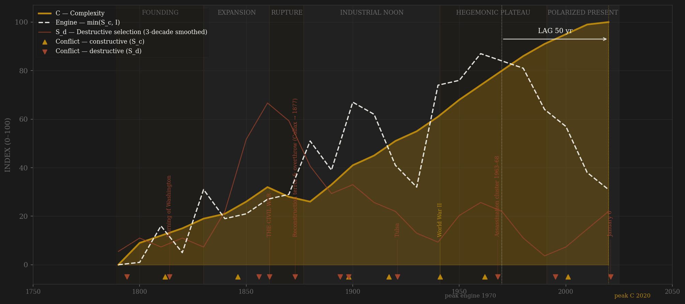
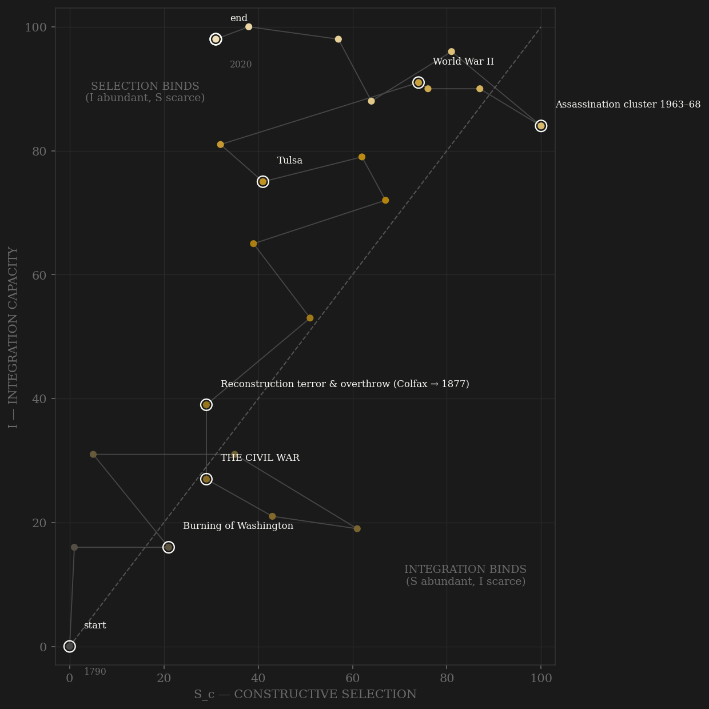

The American arc is a staircase with one crater. Complexity — measured GDP per head, urban share, patents per capita, schooling years, life expectancy — compounds almost monotonically from 1790 to the present; even the Civil War barely dents the trend at decade resolution. What moves is the engine underneath. Selection starts modest (a franchise limited by property and race scores honestly low on measured contest), widens through Jacksonian suffrage and the war-forged ladders of the 1860s (Homestead, Morrill, the war commissions), reopens decisively at Pendleton in 1883 — the civil-service examination replacing the spoils market — and then climbs the twentieth century as the pool itself doubles and redoubles: women in 1920, Black Americans effectively in 1965, immigrants again after 1965, veterans through the GI Bill's 7.8 million. The peak is the 1950s–1970s plateau, where every channel maxes at once: measured absolute mobility at 92% for the 1940 birth cohort, the Cold War supplying permanent peer discipline that funded the ladder itself (Sputnik → NDEA within a year — channel B paying for channel A), and within-rules contest at its V-Dem maximum. Then the long ebb, measured, not asserted: mobility halves to 50% by the 1980 cohort, the Soviet collapse zeroes the peer channel (Olson's warning — no rival left to price failure), lobbying spend triples, and after 2000 the within-rules channel itself degrades — two contested certifications in six cycles. The engine's smoothed peak sits at 1970; by the 2020s row the constructive-selection composite has fallen two-thirds from it. Complexity, meanwhile, is still rising when the series ends — the terminal row is a partial decade and the C peak is RIGHT-CENSORED. The lag reads ≥ +50 and cannot yet be closed. That is precisely the framework's bet: engines lead outputs by decades, so a 1970 engine peak implies the output turn lands somewhere in the mid-21st century. Nothing in this page fits that claim to data; the modern rows were never in the estimation sample.

The trajectory enters at the bottom-left corner — a thin coastal republic with real contest but no continental machine — and, unlike every premodern polity in the sample, climbs BOTH axes for a century and a half almost without touching a wall. The nineteenth century is the integration build (canals, rails, the national banking system, time zones: the measured arcs), the twentieth is the selection build (the pool-doubling amendments, the examination state, the immigrant ladder), and mid-century the path reaches the top-right corner — the 1960s sit near (100, 90), the fullest simultaneous S×I in the entire study. What happens next is the diagnostic: the path turns LEFT. Integration holds at its ceiling — the interstates, the container ports, the internet keep the lattice near 100 — while constructive selection drains down the x-axis: 100 in the 1960s–70s, 64 by the 1990s, 31 in the 2020s row. This is the Song shape, not the Rome shape: a polity that never lost coordination and is instead bleeding contest — mobility measured at half its postwar level, no peer to discipline it for a generation, its internal contest curdling from alternation into siege. The binding constraint at the terminal row is SELECTION by a factor of three. Where the trajectory dies is not yet written; the framework's wager is that it keeps sliding along the top wall until complexity follows the engine down.
Coded by locus and target, never by outcome. The American ledger contains the sample's most scrutinized calls, so the rule is applied at maximum precision. THE CIVIL WAR is the singular S_d event and the series ceiling: ~750,000 dead (Hacker 2011), and secession is definitionally violence about whether the union's coordination machinery binds — the locus is the machinery itself. The antebellum decade already scores: Bleeding Kansas is a proxy civil war over the constitutional settlement, and the caning of Sumner is violence INSIDE the chamber — the machinery failing in its own hall. Reconstruction and its overthrow are S_d twice over: first the Klan's war on the new Black political machinery (Colfax, the Mississippi Plan), then the armed removal of elected governments — Wilmington 1898 is the type case, a municipal coup executed while the same year's Spanish-American War sits correctly in channel B. The hard external cases run the other way. The burning of Washington in 1814 IS S_d — the core penetrated, the Capitol burned (the Chang'an rule) — but at attenuated amplitude, because the government self-evacuated and reconvened within weeks (the Athens precedent). 9/11 is NOT S_d, and the distinction is the locus rule working: the towers and the Pentagon were coordination SYMBOLS, but no contest for control of the machinery existed — continuity of government held within hours (the Medway precedent: assets burned, machinery untouched). January 6, 2021 is the mirror image and the reason the rule exists: negligible body count, but the target was the certification machinery itself — the first physical disruption of the peaceful-transfer mechanism in the series. Locus, not blood (the Song Yuanyou precedent: proscription without corpses still scored). Coding it otherwise would require coding by outcome, which would make the framework unfalsifiable.
| YEAR | CONFLICT | CODE | CODING RATIONALE |
|---|---|---|---|
| 1794 | Whiskey Rebellion | Sd | Armed refusal of the new federal tax machinery — internal locus; put down by Washington in person, the machinery demonstrated rather than broken |
| 1812 | War of 1812 | Sc | Peer war against the superpower — channel B at its pre-1917 maximum; coded separately from the 1814 core penetration |
| 1814 | Burning of Washington | Sd | External origin, core penetrated — Capitol and White House burned (Chang'an rule); amplitude attenuated because the government self-evacuated and Congress reconvened within weeks (Athens precedent) |
| 1846 | Mexican-American War | Sc | Interstate peer war (COW), fought beyond the core — textbook channel B; the political fight over its spoils scores C, not S_d |
| 1856 | Bleeding Kansas & the caning of Sumner | Sd | Proxy civil war over the constitutional settlement; a senator beaten unconscious at his desk = violence inside the machinery's own chamber |
| 1861 | THE CIVIL WAR | Sd | The singular S_d event: ~750,000 dead (Hacker 2011), 2.4% of population — secession is violence about whether the union's coordination machinery binds; S_d by definition, the series ceiling |
| 1873 | Reconstruction terror & overthrow (Colfax → 1877) | Sd | The Klan war on the new Black political machinery, then its armed removal — S_d against the newly widened pool; ends with the 1877 withdrawal |
| 1894 | Labor wars (1877 railroads, 1892 Homestead, 1894 Pullman) | Sd | Federal troops and militia against strikers' capacity to organize — the Peterloo rule; three waves, one ledger row |
| 1898 | Spanish-American War | Sc | Peer interstate war, external locus throughout — re-entry into great-power contest; same-year mirror of Wilmington below |
| 1898 | Wilmington coup | Sd | Armed overthrow of an elected municipal government — S_d at maximum locus precision; separate ledger row, no arc annotation (same-year chart rule) |
| 1917 | World War I | Sc | Full peer war, core untouched (Hannibal rule); the Palmer raids and Red Summer that follow are coded S_d in the decade ledger |
| 1921 | Tulsa | Sd | Destruction of Greenwood — a pogrom aimed at a community's economic coordination machinery; the KKK second era's amplitude marker |
| 1941 | World War II | Sc | Two-front total peer war = channel B ceiling; Pearl Harbor is a frontier naval raid, core untouched (Medway precedent); internment 1942 coded S_d at low amplitude in the ledger (Culloden rule) |
| 1962 | Cold War maximum (Cuba, the races) | Sc | The framework's cleanest modern channel B: permanent peer contest with near-zero direct war-years — missile crisis, space race, Sputnik→NDEA (B funding A) |
| 1968 | Assassination cluster 1963–68 | Sd | JFK, Malcolm X, King, RFK, plus the urban risings — violence aimed at the leadership layer of coordination itself; the postwar S_d maximum |
| 1995 | Oklahoma City | Sd | 168 dead in a federal building — aimed literally at the state's administrative machinery; the militia wave's amplitude marker |
| 2001 | 9/11 | Sc | NOT S_d, defended: coordination SYMBOLS struck, but no contest for control — continuity of government held within hours (Medway rule: assets burned, machinery untouched); scores ≈0 on channel B because a non-peer network cannot discipline like a peer |
| 2021 | January 6 | Sd | S_d BY LOCUS: target was the electoral certification machinery itself — the first physical disruption of the peaceful-transfer mechanism in the series; negligible body count is irrelevant (Song Yuanyou rule: locus, not blood) |
| COMPONENT | GRADE | BASIS |
|---|---|---|
| S_c A — Elite-entry (0.40) | ◐ hybrid: 0.45 coded + 0.55 measured | Measured: DHS immigrant-incorporation rate per decade 1820+ (inflow/population) + Chetty et al. 2017 absolute mobility published cohort aggregates (92% of the 1940 cohort out-earned parents → 50% of 1980; cohort mapped to decade +30yr). Coded strand: spoils → PENDLETON 1883 (the channel-A reopening event) → merit spread; pool-widening coded as contestability (15th Amdt 1870, 19th Amdt 1920, Civil Rights/Voting Rights 1964–65 — the eligible pool doubling; Jim Crow 1890s coded as narrowing); Homestead/Morrill 1862, GI Bill 1944, Immigration Acts 1921/24 (closing) and 1965 (reopening); late rentier signal: lobbying $1.45B (1998) → $4.3B (2023), Citizens United 2010, legacy/donor capture. Clio education EXCLUDED from A (already in C — anti-halo rule) |
| S_c B — External rivalry (0.30 cap) | ◐ hybrid: 0.5 COW war-years + 0.5 coded | Interstate war-years/decade from COW v4.0 + pre-1816 chronology, peer- and locus-cleaned (Civil War & Indian Wars = S_d; Barbary, Philippine 1899–1902, GWOT insurgencies = non-peer, excluded). Coded strand carries what war-years miss: the COLD WAR 1947–91 as the cleanest modern B (permanent peer contest, near-zero war-years), and the post-1991 UNIPOLAR COLLAPSE — no peer, B≈0, Olson's warning; the 2010s China rivalry returns at partial depth (2017 NSS, CHIPS 2022). This channel alone = Sc_v1_combat |
| S_c C — Within-rules politics (0.30) | ● measured | 0.5 OWID/V-Dem electoral democracy decade means 1789–2025 + 0.5 Polity5 POLCOMP 1789–2020 (special codes → NaN). Carries the constitutional showcase (contested elections, peaceful alternation) and the late degradation honestly: V-Dem 0.876 (2010s) → 0.817 (2020s); POLCOMP 10 → 7 after 2016; contested legitimacy 2000 and 2020 |
| S_d — Destructive | ○ coded ordinal, death-toll anchored | Locus-and-target per decade (coding_ledger_v2.csv): Civil War = 10 ceiling (~750k dead); Reconstruction terror, labor wars, Tulsa 1921, the 1963–68 assassination cluster, Oklahoma City 1995, Jan 6 2021. Hard calls defended in the ledger: Washington 1814 S_d (attenuated), 9/11 NOT S_d, Jan 6 S_d by locus |
| I — Integration | ● measured arcs 0.6 + ○ coded 0.4 | Seven measured network/cost arcs, each normalized to own span: railroad density 1830–2000, inverse rail freight cost 1840–2020 (Fogel/ICC), inverse telegraph rate 1850–1970, telephone and electricity household adoption (Comin-Hobijn), autos/1000, internet adoption 1990–2020. Coded institutional ordinal: commerce clause, Erie 1825, national banking 1863, time zones 1883, Fed 1913, New Deal financial re-integration, Interstate 1956, containerization, interstate banking 1994, platforms; 2010s–20s notes: internal migration at record lows, supply-chain fragmentation. Pre-1830 rows: coded only (no measured arcs exist), flagged in I_notes |
| C — Complexity | ● measured | Equal-weight mean (≥2 required) of: log Maddison GDPpc (annual 1800+), Census/OWID urban share (1790+), log USPTO/WIPO patents per capita (1790–2020), Clio avg years of education (1870+), OWID life expectancy (1880+). RIGHT-CENSORED at the terminal row — still rising in the 2020s partial decade |
| E — Entropy | ● crises + inflation · ◐ debt + trust | 0.35 financial-crisis strand (Reinhart-Rogoff US banking-crisis years 1790–2014 — the panic spine 1792/1819/37/57/73/93/1907/29/2007 — blended with log Grossman bank-failure counts 1865–2010) + 0.25 inflation stress (share of years |π|≥5%: FRED CPIAUCNS 1913+, coded episodes before) + 0.20 federal debt/GDP (R&R 1790–2010, FRED GFDEGDQ188S 2010s+) + 0.20 institutional-trust decay (NES/Pew inverse, 1958+: 73% → ~19%) |
| R — Population | ● measured | Maddison millions (annual 1820+); OWID/Census fills 1790–1819. 2020s row is a partial decade, flagged |
24 decade rows (1790–2010s, plus a PARTIAL 2020s row with data through ~2024), built STRAIGHT to S_c definition v2 (0.40 elite-entry / 0.30 external hard cap / 0.30 within-rules) by scripts/build_usa_sicre.py, 2026-07-06; per-decade channel scores and rationales in data/raw/usa/coding_ledger_v2.csv; full component audit in components_audit.csv; Sc_v1_combat = channel B alone per the straight-to-v2 convention. THIS BUILD SUPERSEDES the earlier prototype composite_SICRE_modern.csv from build_modern_sicre.py (nonstandard schema, Polity2-driven S_c, hand-coded I/C/E) — kept on disk as provenance, read by nothing. BOTH DEFINITIONS REPORTED, BOTH RIGHT-CENSORED IN C: v2 engine 1970 → C 2020s = lag ≥ +50 RIGHT-CENSORED (smoothed complexity peaks on the terminal row and is still rising; ≥+50 is a lower bound, not a peak-to-peak measurement — the British precedent); v1 combat-only engine 1950 → C 2020s = lag ≥ +70 RIGHT-CENSORED. The ENGINE peaks are interior and NOT censored: the v2 engine has fallen from 84 (smoothed, 1970) to ~32 by the 2020s row. Unsmoothed cross-check: v2 engine 1960 → +60; v1 engine 1940 → +80. Engine-peak fragility: smoothed v2 top decades are 1970 (84.0) vs 1960 (82.3) vs 1950 (79.0) — a 2-point wiggle moves the peak within the same plateau, never out of it. Channel peaks (smoothed): A elite-entry 1970, B rivalry 1950, C within-rules 1990 — the terminal S_c decline is led by measured A-decay (mobility 92%→50%) plus the 1991 B-collapse; this is the H-RENT-001 shape, NOTED ONLY — the sealed prereg is not run here and no pooled statistic has been computed. Frozen protocol throughout: 3-decade centered rolling mean, engine = min(S_c, I). THE OUT-OF-SAMPLE BET, stated plainly: the framework was developed on historical polities; these modern rows were in no estimation sample and nothing here is fitted. The measured engine peaked circa 1970 and complexity is still rising — the framework predicts the complexity turn follows the engine peak with a multi-decade lag. If C is still rising decades from now with the engine still at a third of its peak, the framework is wrong and this page is where that will be visible first. Within-polity min-max caveat: V-Dem scores make the antebellum republic low on channel C against its own 20th century (narrow franchise, slavery — an honest property of the source). Rebuild: build_usa_sicre.py, then polity_report.py --slug usa.